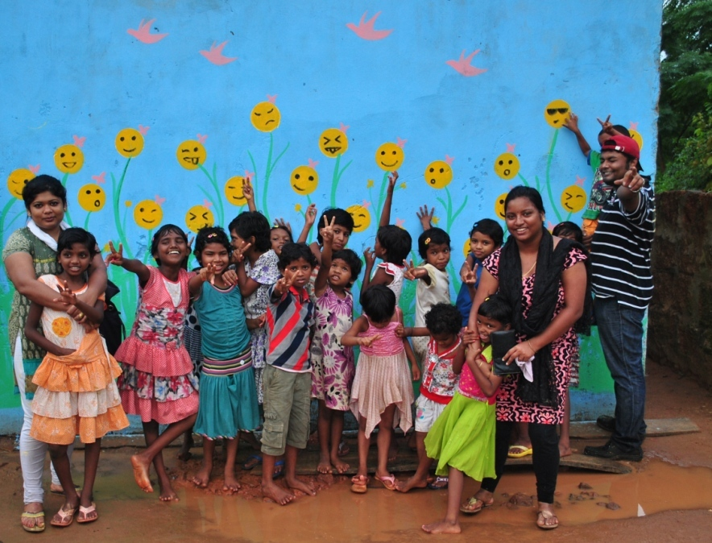
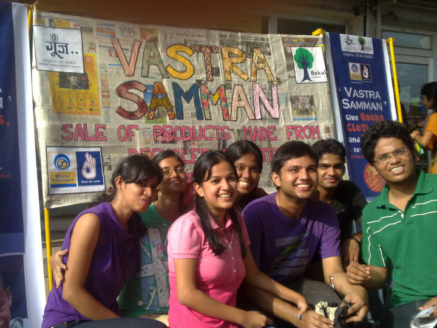
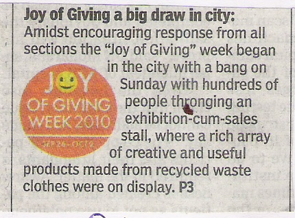

International Volunteer Day, 5 December:
In partnership with UNV, UNDP, CYSD and RCDC, Bakul Foundation has been organizing the International Volunteer Day celebrations in Bhubaneswar. Every year, on 5 December, a few hundred young volunteers congregate and listen to inspirational speeches by leaders and peers, get inspired by the work of the exemplary volunteers, who are recognized and get moved by the movies and songs they see and hear.
See a Film on IVD here:
International Day of Service:
With the understanding that many young people are probably more inspired to volunteer after an opportunity to do so more than any speeches, Bakul decided to create this excuse for people to volunteer in partnership with other friends across the world. This event celebrated in May, is however, celebrated in the biggest way in India in about 25 cities by volunteers of Bakul and their friends, who go to orphanages, old age homes etc. and offer a few hours of service.
See pictures by clicking the image:

The Joy of Giving Week:
This is a national festival of giving celebrated from 2 to 8 October every year and since the beginning in 2009, Bakul has taken a lead role in the celebrations in Odisha. From Nandita Das doing storytelling at the Bakul Library to Bakul organizing activities to mobilize people to contribute such as Vastrasamman in partnership with Goonj for whom we did the major mobilization within Odisha, and mobilizing at the time of disasters with media support, Bakul has played an active role naturally since Bakul has been identified as an organization where people give with trust.
Bakul has also been organizing fundraising activities in the JGW such as Fundraising dinners and Wish Trees in Corporates.
See Joy of Giving Week pictures by clicking the image:

See media reports on Joy of Giving Week by clicking the image:

Nabakalebara:
In 2015, during the Nabakalebara in Puri, which saw unprecedented rush of pilgrims, Bakul in partnership with UNICEF, mobilized volunteers to help create awareness on sanitation and child protection issues among the people.